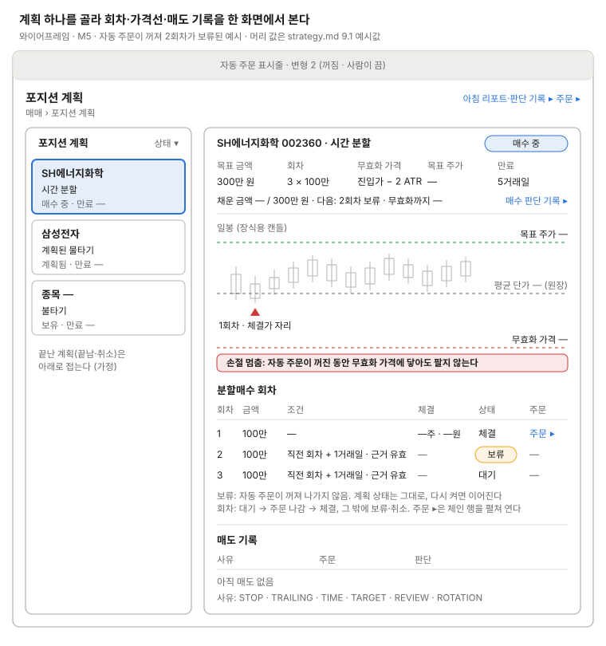

포지션 계획
분할매수 회차, 목표 주가, 무효화 가격을 차트와 함께 보여 준다(Lightweight Charts).

왼쪽에서 계획을 고르면 오른쪽에 그 계획의 목표 주가·평균 단가·무효화 가격선과 회차, 매도 기록이 나오고, 자동 주문이 꺼진 동안 나가지 못한 회차는 "보류"로 보인다. 그래서 이 예시는 표시줄을 변형 2(꺼짐 · 사람이 끔)로 두고, 꺼진 동안 무효화 가격 손절(강제 청산)도 멈춘다는 경고를 무효화 가격선 아래에 보인다.
계획 상태는 상태 표시명(계획됨·매수 중·보유·매도 중·끝남·취소)을, 회차 상태는 결정(2026-10-16)대로 대기 → 주문 나감 → 체결, 그 밖에 보류·취소를 쓴다. 머리 값은 strategy.md 9.1 예시값(3회 × 100만 원, 진입가 − 2 ATR, 5거래일)이고, 회차 표의 체결 칸이 계획값과 체결값을 나눈다. 차트의 회차 표시는 체결가 자리에 찍고, 평균 단가는 원장 값이다(제안). "주문 ▸"은 주문 화면의 체인 행을 펼쳐 연다(제안).
쓰는 공통 UI
화면 틀 · 자동 주문 표시줄 (변형 2, 켜진 때 변형 1) · 상태 표시명 (포지션 계획)
상태
| 상태 | 보일 것 |
|---|---|
| 계획 없음 | 목록에 "포지션 계획이 없다" 한 줄, 오른쪽은 비움 |
| 불러오는 중 | 목록·차트 자리에 뼈대 |
| 조회 오류 | 마지막 값을 두고 오류 한 줄 + 다시 시도 |
| 회차 주문 나감 | 회차 "주문 나감" + 주문의 상태 표시명(미체결·부분 체결) |
| 회차 주문 거부·확인 중 | 회차 옆에 주문 상태 표시명(거부·확인 중)과 이유 |
| 다음 거래일로 이월 | 장 마감 때 미체결 회차에 "이월" 표시(strategy.md 15장) |
| 근거 재확인 미달 | 회차에 "근거 재확인 < 0.5" 이유(9.2). 회차를 어떻게 둘지는 정할 것 |
| 만료 | 남은 회차 "취소" + 만료일. 계획이 보유로 가는지는 9.3 글을 따름 |
| 매도 중 (EXITING) | 머리 배지 "매도 중", 매도 기록에 진행 중 주문 |
| 취소 (CANCELLED) | 머리 배지 "취소" + 사유(무효화 가격 도달·만료·근거 소멸) |
| 자동 주문 꺼짐 | 표시줄 변형 2, 회차 "보류", 무효화 가격선 아래 "손절 멈춤" 경고 |
| 실시간 끊김 | 표시줄 변형 5, 무효화까지 거리 옆에 받은 시각 |
화면 규칙
- 데이터:
position_plans(mode, target_amount, invalidation_price, target_price, status, expires_on),plan_tranches,exits - 주의: 자동 주문이 꺼져도 계획 상태는 그대로이고 회차와 강제 청산(무효화 가격 손절) 주문이 나가지 않는다. 회차 주문이 정정되면 번호가 바뀐다